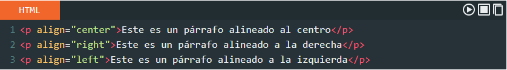
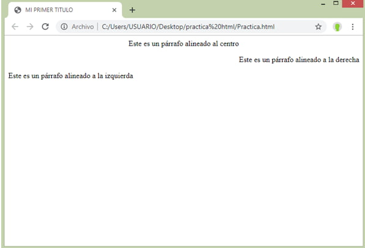

Estamos a la vanguardia de la tecnología y el mundo de la programación es uno de los principales
medios por los cuales se logra adentrar en ella. Este es uno de los motivos por los cuales no
debes dejar tu interes por el desarrollo futurista, animate y ven a conocer mas sobre este
lenguaje de programación en cuanto a etiquetas Básicas de HTML, atributos y valores .
Etiquetas Básicas de HTML

Las etiquetas basicas de HTML son indicadores de lenguaje de marcas de hipertexto utilizadas
para el formato y la estructura de paginas web. Es un estándar adoptado por todos los
desarrolladores que, mediante etiquetas de texto, le permite a los navegadores interpretar los
elementos de una página web, no importa en dónde, cuándo o en qué idioma fue creada, para mostrar
su contenido a los usuarios (Coppola, 2021).
Partes basicas de las etiquetas
Elemento: es el nombre de la etiqueta, generalmente pareada (es decir: con apertura y
cierre, como lo acabamos de mencionar), y aparece entre los signos de apertura.
Atributo: es lo que diferencia a un elemento y que le da ciertas características,
como tamaño, color, tipo de fuente.
Contenido: es el texto que modifica las etiquetas, lo que aparece entre las
etiquetas y atributos.
Variable: es la característica del atributo de una etiqueta: color, tamaño,
tipo de letra, y se escribe generalmente entrecomillado después del signo de igual.
Algunos tipos de etiquetas son:


Coppola, M. (04 de Febrero de 2021). HubSpot. Obtenido de
https://blog.hubspot.es/marketing/etiquetas-html
Atributos y valores

Los atributos en HTML se pueden considerar como información adicional que se coloca siempre en la
etiqueta de apertura, esto para añadir, complementar información o significado al elemento HTML
al que estamos colocando.
"Los atributos HTML van siempre dentro de la etiqueta de apertura y sirven para modificar o
agregar alguna característica al contenido"
Lista de los atributos más usados en HTML
- Id =” ”: Para identificar un elemento único.
- class =” ”: Identificador múltiple.
- align =” ”: Alineación de contenido.
- border =” ”: Para darle borde al contenido.
- style =” ”: Para darle un estilo al contenido.
- background-color =” ”: Para color de fondo.
- href =” ”: Para enlaces html.
- height =” ”: Para determinar altura.
- width =” ”: Para determinar ancho.
- src=“ ”: Para imágenes.
Cómo colocar atributos en HTML
Un atributo se escribe de la siguiente manera: Atributo=“valor” en esa forma, el nombre del
atributo, seguido del signo igual (=) y entre comillas el valor, todo esto siempre dentro
de la etiqueta de apertura.
Atributos HTML y sus valores
Atributo: valores
- Id.- su valor puede ser cualquier palabra que sirve para identificar un elemento.
- align.- alineación, sus valores pueden ser: center, right, left, justify.
- border-style.- estilo de borde, los valores disponibles son: solid, dotted, dashed, double, etc.
- bgcolor.- Para color de fondo para ciertos elementos como body, el valor puede ser cualquier color
en formato palabra, hexadecimal, RGB, etc. ejemplo: red, green, #ff0000, etc.
- href .- para enlaces su valor puede ser la dirección de un carpeta o URL.
- height .- para definir altura, su valor puede ser una medida con su unidad de medida, por ejemplo: 10px, 12em, 100%.
- width.- define el ancho y su valor puede ser cualquier medida con su respectiva unidad de medida.
Ejemplo:
Por ejemplo el atributo align con su valor en center aplicado a un párrafo hará que el texto este alineado al centro.
Además probemos los otros valores como el de derecha e izquierda.

Resultado

Desarrolladores Web. (2021). Desarrolladores Web. Obtenido de
https://desarrolladoresweb.org/html/atributos-html/